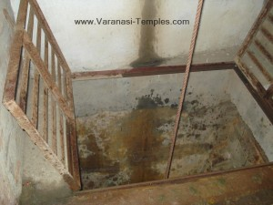
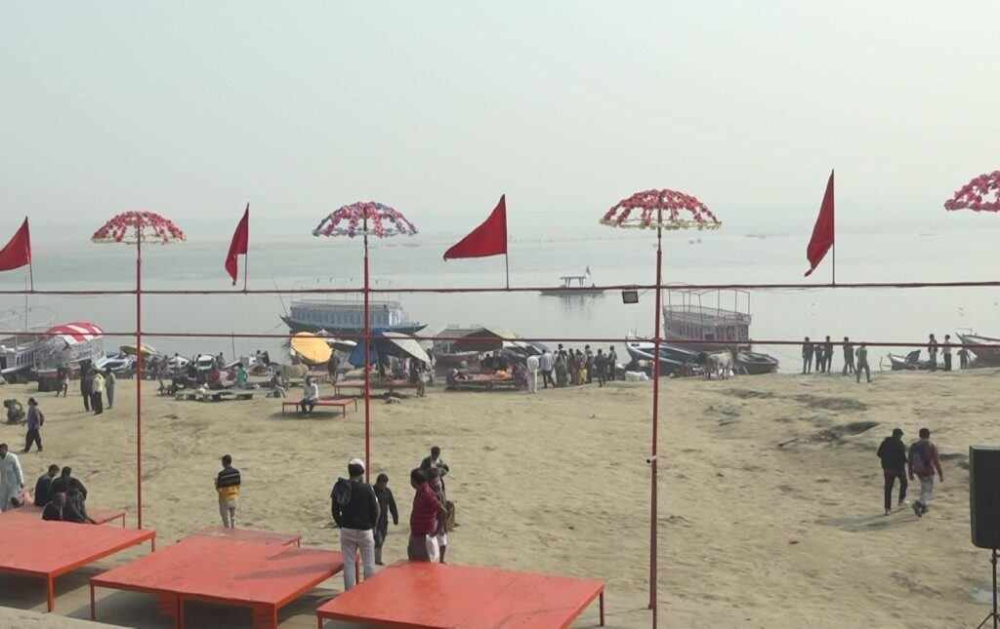
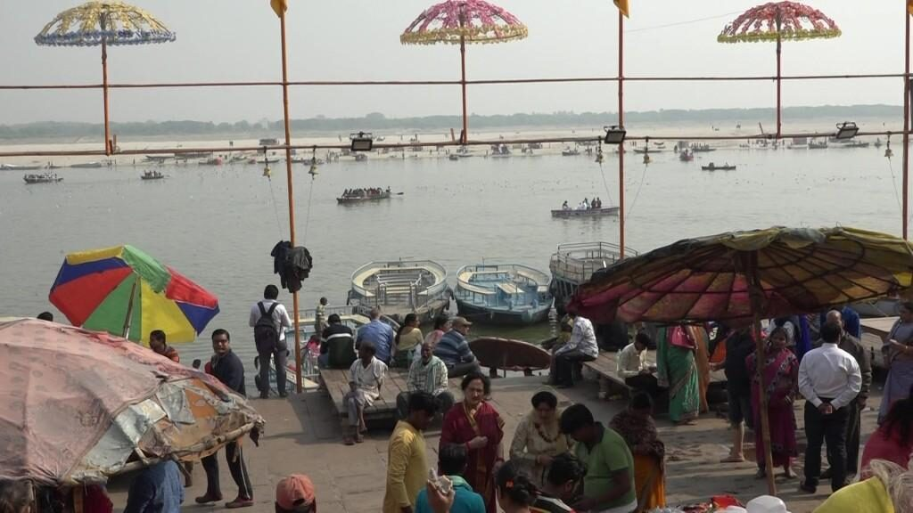
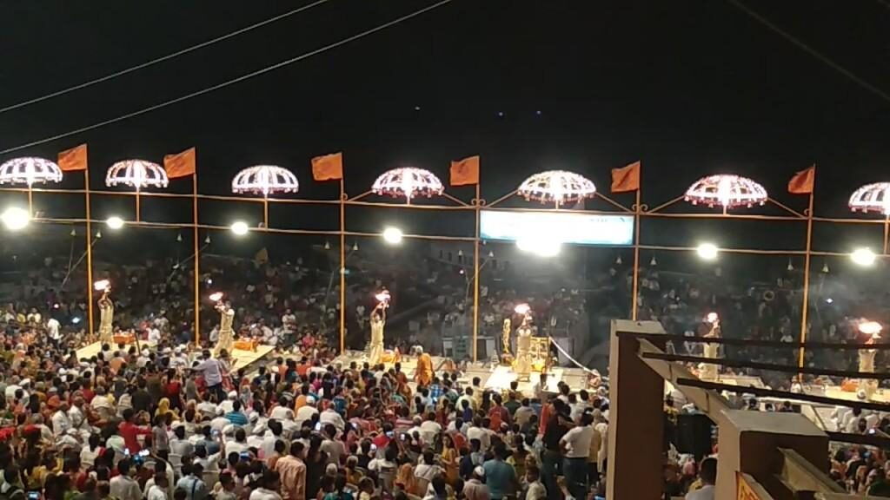
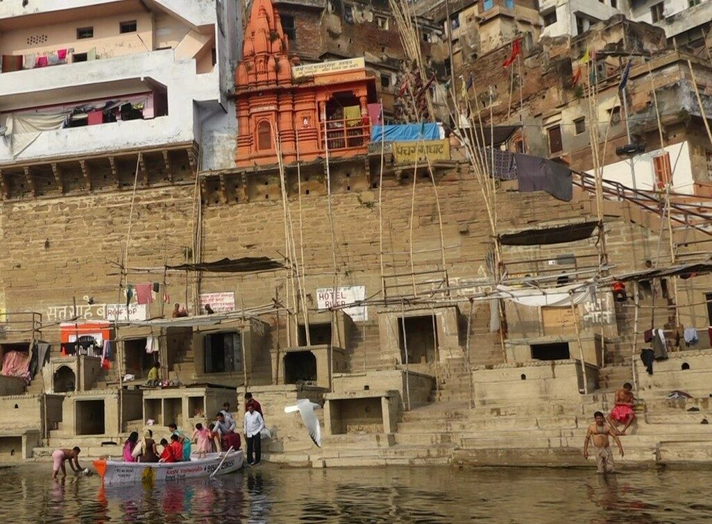

GYAN VAPI
According to Kashi Khand one Digpal named Eeshan came to Kashi and with his Trishul dug a Vapi which came to be known as Gyan Vapi. He then started worshipping Lord Shiva. The water from this Vapi (Well) is capable of giving knowledge to the devotees. This well is located near the Gyan Vapi Mosque on the way to Vishwanath Temple.
Kashi Khand has described the power of water from Gyan Vapi in Chapters 33 and 34. One Princess Kalawati was presented a map of Kashi and when she happened to touch the Gyan Vapi in the map with her finger, she could recollect the events that had occurred in her previous birth.
Elsewhere Kashi Khand has amply described the good effects of Gyan Vapi water in various chapters. A devotee who takes bath in Gyan Vapi and performs rituals for his forefathers will make them extremely happy and even if they are rotting in hell, they are certain to reach the heaven.
However, in the present day scenario, with heavy police patrolling, it may not be possible to freely engage in such activities. However, devotees can have darshan of the Gyan Vapi, take some water therefrom for sprinkling over their heads or consumption as Prasad.
LOLARK KUND
Kashi Khand has attached great importance to Lolark Kund mainly because of the presence of Lolark Aditya (Chapter 46).
Of all Teerths, Lolark has been given great importance. Taking bath in Lolark Teerth (now Lolark Kund), performing pooja etc., at this place is considered to be very beneficial to devotees.
Important days for Lolark Kund as observed by the devotees are Margsirsh month, Shukla Paksha Shashti or Saptmi (conjoined with Sunday), Magha month, Shukla Paksha Saptmi (Rath Saptmi).
Our enquiries reveal that no one takes regular bath in this Kund. However, there is a huge crowd on special days, as above.
——————————————————————————————————-
Kashi Khand, Chapter 46, Shlok 56
प्रत्यर्कवारं लोलार्क य: पश्यति शुचिव्रत:
न तस्य दु:खं लोकेऽस्मिन् कदाचित्संभविष्यति
Whoever observes a holy fast and worships Lolark every Sunday, does not have to suffer any sorrow in this world.
———————————————————————————————————
Please watch our YouTube video on the subject in the following Link :
https://www.youtube.com/watch?v=L6aCdl5kBjc&t=65s
Devotees come to this Kund to worship Lolark Aditya. The approach to the Kund is well constructed with steps leading down from three places. On the fourth side, the kund takes the shape of a well.

(LOLARK KUND)
Devotees who visit Kashi, can combine visit of this place alongwith Durga Devi temple which is about 1 km. in proximity.
VIMAL TEERTH (PISACHMOCHAN TALAB)
Vimal Teerth is an important teerth and now the Teerth is known as Pishachmochan Talab and is probably the biggest Teerth available in Varanasi. Devotees even now take bath in the Talab (Pond) on auspicious days.
According to Kashi Khand, in ancient times one devotee of Kapardeeshwar named Valmiki was residing nearby. One day a hideous and cruel looking Pishach/demon (ghost) appeared and told Valmiki that he (Pishach) was once residing near the banks of the holy river Godavari and had committed many sins. He learnt that a person who lives in Holy places and commits sins, attains Pishach Yoni and his present appearance was due to his past sins. He appealed to Valmiki to help him.
Valmiki was all the while chanting Shiv Sahasranam(thousand praises of Lord Shiva) and advised the Pishach to take bath in Vimal Kund and pray to Lord Kapardeeshwar. The pishach did as he was told and attained Mukti. After that, Valmiki gave him vibhuti (sacred ash) to be smeared on his forehead and the Pishach followed his instructions. The value of smearing vibhuti on the forehead is amply described in Kashi Khand inasmuch as a person who smears vibhuti in his forhead is safe from untimely death and mishappenings.
After the Pishach attained Mukti, the above Vimal kund came to be called as Pishachmochan Kund (Kashi Khand chapter 54). This huge kund is still existing in the present day and fairly well maintained.

(VIMAL TEERTH – PISACHMOCHAN KUND)
People visit this Pishachmochan Kund for performing Pind Daan (Shraaddh/ rituals for their forefathers). Visiting this place is considered very auspicious during Magh month (January – Feb), Shukla Chaturdasi (one day before Amavasya).
——————————————————————————————————-
Kashi Khand, Chapter 54, Shlok 84
पैशाचमोचने तीर्थे संभोज्य शिवयोगिनम्
कोटिभोज्यफलं सम्यगेकैकपरिसंख्यया
Feeding of one Shiv Bhakt in Pisach Mochan Teerth (in Kashi) will yield full punya benefits of feeding one crore sanyasis.
———————————————————————————————————
Please watch our YouTube Video about Pisach Mochan Talab at below Link :
https://www.youtube.com/watch?v=L6aCdl5kBjc&t=65s
Shri Kamlesh Tiwari is available at the place and he can be contacted on his Cell number (0)9918989066 for doing any special pooja. Shri Tiwari is also available for helping devotees to perform any rituals for their forefathers at Pishachmochan Kund.
PILPILA TEERTH
Kashi Khand, at various places, mentions one important Teerth called as Pilpila Teerth.
During Kashi Khand days, this Teerth must have been very big but now it is existing in the form of a Koop (Well). Pilpila Koop is located near Trilochaneshwar temple. The compiler visited the place on Akshay Triteeya day (a very auspicious day when many people take bath in the Koop). The compiler took bath with the water drawn from the well and were given to understand that there is a huge crowd on the above auspicious day.


Pilpila Teerth (Koop)
On Akshay Triteeya day, taking bath in Pilpila Teerth and having darshan of Trilochaneshwar and Madhusudan (Vaman Keshav) is considered very auspicious and compiler was lucky enough to go through the pious ritual as mentioned above.
During the other days, the place remains open for about one hour or so and at times it remains closed also.
VARUNA SANGAM
According to Kashi Khand, Chapter 30, Kashi is a Mukti Kshetra. Long back Yama, Indra and Agni witnessed the devotees in Kashi engaged in religious activities and they drew boundaries for Kashi. All the above Lords, with a view to destroy Asatya (falsehood) and bad thoughts in the Holy City, created Assi River. Then they created Varuna River and made it run through the other end of Kashi.
As per the directions of Lord Shiva, Lord Vishnu proceeded towards Kashi (kindly refer to Padodak Teerth). On reaching Kashi, Lord Vishnu saw the entire kshetra with bird’s eye view. He then went to a place where the Holy Rivers Varuna and Ganga conjoined and washed his hands and feet.
The place where Lord Vishnu’s Charan (feet referred to with respect) were washed came to be known as PADODAK TEERTH. According to Kashi Khand, Chapter 58, devotees who bathe in Padodak Teerth will cleanse all their sins accumulated over 7 births, including the present life.
At the time when the events mentioned in Kashi Khand must have occurred (in Sat Yug), Varuna must have extended upto the present day Trilochan, because the place where Lord Vishnu washed his feet near Varuna Ganga Sangam is Padodak, which is now existing in the form of a well in Trilochaneshwar temple.

VARUNA GANGA SANGAM
Kashi Khand at several places has mentioned the importance of Varuna river. It is believed that devotees who bathe in Varuna-Ganga sangam and worship Varuna Sangameshwar will be blessed with all sorts of prosperity.
Please watch our YouTube Video about Varuna Ganga Sangam in the below Link :
https://www.youtube.com/watch?v=sIu14DKGbEs&t=52s
South Indian pilgrims who undertake Kashi yatra perform Pancha Ghatta Pindam and one of the places identified for the purpose is Varuna. However, the fifth place where they do the ritual is Trilochan Ghat. This must be because, the area of religious influence of Varuna must be extending upto Trilochan.
However, the devotees are advised to take a boat ride upto Varuna Ganga Sangam and in the process they can also have darshan of Adi Keshav temple alongwith other deities therein.
ASSI SANGAM
Towards the southern part of the Holy city is the Assi Ganga confluence. Assi has been mentioned as a river once upon a time but now it is virtually a streamlet.
According to Kashi Khand, Chapter 30, Kashi is a Mukti Kshetra. Long back Yama, Indra and Agni saw the devotees in Kashi engaged in religious activities and they drew boundaries for Kashi. All the above Lords, with a view to destroy Asatya (falsehood) and negative thoughts in the Holy City, created Assi River.
According to Kashi Khand, Chapter 46, a devotee who takes bath in Assi Ganga Sangam and performs rituals for his forefathers does a great service to them. By bathing in Assi Ganga Sangam, the devotee gets the benefit of taking bath in all sacred teerths.
Kashi Khand has references of Assi Ganga Sangam in various chapters. In various references to Lolark, it is stated to be near the Assi Ganga Sangam, whereas in the present days, Lolark is a bit away. This leads one to believe that the religious/spiritual influence of Assi Ganga Sangam (Confluence of two rivers Assi and Ganga) must have been very wide.
The place where two rivers conjoin is usually considered to be very auspicious. In fact the name Varanasi was coined as that Kshetra which is in between two great rivers Varuna and Assi.

(ASSI GHAT – VIEW FROM GHAT STEPS)
At present Assi Ghat is a very wide area and offers a very beautiful appearance. Many devotees visit this place and it is virtually the only place where four wheelers can take them as near as to Ganga as possible and a parking lot is also there.
Please watch our YouTube Video about Assi Teerth in the below Link :
https://www.youtube.com/watch?v=GjYa_ntAvtQ&t=15s
As per religious importance Assi Ganga Sangam area covers a vast stretch even surpassing the present day Tulsi Ghat. The South Indian pilgrims who undertake Pancha Ghatta Pindam (Assi, Dasaswamedh, Manikarnika, Panch Ganga and Varuna), generally bathe near Tulsi Ghat which, as mentioned above, comes under the religious sanction at Assi Ganga Sangam. They may take a cue and bathe near Assi Ghat.
Ganga Aarti is being conducted in Assi Ghat also, which is a visual treat.
MANIKARNIKA
According to Kashi Khand, Chapter 26, at the time of Maha Pralay (deluge) there was absolute destruction every where and darkness prevailed all over. There was no direction anywhere, no one to speak, cry or listen.
At that time the ever pervading Brahm existed and the omnipotent Lord Almighty Shiva manifested himself alongwith Goddess in the form of Shakti. Lord Shiva addressed himself as Purush and Goddess as Shakti Roopee stree (feminine embodiment of energy). As far as land is concerned, only the area representing Pancha Krosha Kshetra existed. (Pancha Krosha means five Krosha, again Krosha is a measurement of distance which is approximately equal to 2 miles). Taking a mid point, a radius of 10 miles was the Pancha Krosha Kshetra.
Even during the worst time of deluge, Lord Shiva and Goddess Parvaty did not leave this place (Pancha Krosha Kshetra), therefore this place is known as Avi Mukta Kshetra. Lord Shiva desired that every one in the Kshetra (region or area) should be happy and the place was called as Ananda Kanan (Anandavan).
Lord Shiva cast a soft and affectionate glance to his left side wherefrom a handsome man appeared. Since this person qualified as Uttama Purush, he was known as Purushottam. Lord Shiva was glad and he proclaimed that Purushottam was none other than Maha Vishnu. Lord Shiva and Lord Vishnu entered Anand Van where Lord Vishnu immediately engaged himself in intense prayers.
With his Sudarshan Chakra, Lord Vishnu dug a huge Pond and filled it with his divine perspiration. This Kund came to be known as Chakrapushkarini Teerth. Lord Vishnu was deeply engrossed in his prayers and Lord Shiva was moved by the former’s sincerity. He requested Lord Vishnu to get up and ask for divine boon. Lord Vishnu desired that both Lord Shiva and Goddess Parvaty should always be available to accept his (Lord Vishnu’s) prayers. Lord Shiva’s jewel from the ear tops fell in the Chakrapushkarini Teerth and then onwards the Pond came to be called Manikarnika (jewel is referred to as Mani and Karnika means ear).

Manikarnika Ghat
Lord Vishnu further stated that the entire area is shining with a bright divine light with great radiance and, therefore, this Kshetra (region) will be called as “Kashi”. (Even now Kashi is referred to as City of Light).
——————————————————————————————————-
Kashi Khand, Chapter 26, Shlok 117
सर्वतीर्थेषु संस्नानाद्यत्पुण्यं समवाप्यते
तत्पुण्यमाप्यते सम्यङ्ग मणिकर्णयेकमज्जनात्
The aggregate punya accruing out of bathing in all Teerths in the world, will be obtained by taking one dip in Manikarnika in Kashi, with all divinity.
———————————————————————————————————
A devotee who religiously takes bath in Manikarnika will attain Moksha and there is absolutely no doubt about it.
Please watch our YouTube Videos on Manikarnika Teerth in the below Link :
https://www.youtube.com/watch?v=GjYa_ntAvtQ&t=15s
A devotee who takes holy dip in Manikarnika with all devotion, performs rituals for his forefathers and offers prayers to the Almighty will derive the benefits of performing various Yagyas.
——————————————————————————————————-
Kashi Khand, Chapter 34, Shlok 33
तर्पिता: पितरो येन सम्प्राप्य मणिकर्णिकाम्
सप्त सप्त तथा सप्त पूर्वजास्तेन तारिता:
A devotee who goes to Manikarnika and performs Pitru Tarpan, gives salvation to seven generations before him and seven generations after him, including his family.
———————————————————————————————————
Lord Vishnu describes various important Teerths in Kashi Khand, Chapter 61. All the sacred teerths (sacred waters) come to Manikarnika during the noon time for taking bath. While all sacred teerths are capable of cleansing the sins, Manikarnika Teerth tops them all. All those sacred teerths derive their strength from Manikarnika Teerth.
Lord Shiva and Goddess Parvaty themselves come to Manikarnika during noon for taking bath. Lord Vishnu himself comes to Manikarnika during the above time alongwith Goddess Lakshmi from Vaikunth to take bath. According to Lord Vishnu, Lord Brahma also visits Manikarnika at the above time for his bath. Therefore, Maadhyannika Snanam (Bath at noon) at Manikarnika is considered very auspicious and this is a part and parcel of Kashi Yatra being performed by South Indians.
Not only the above Lords, but Lord Indra, other Devas as also great Nag Rajas (Serpent Kings) like Vasuki etc. visit Manikarnika during noon for their holy bath.
——————————————————————————————————-
Kashi Khand, Chapter 61, Shlok 69
जप्त्वैकामपि गायत्रीं सम्प्राप्य मणिकर्णिकाम्
लभेदयुतगायत्रीजपनस्य फलं स्फुटं
Reciting one Gayatri in Manikarnika (in Kashi) will yield punya benefits of reciting 10,000 gayatris.
———————————————————————————————————
As per the above shloka, a devotee who chants one Gayatri Mantra at Manikarnika gets the benefit of chanting ten thousand Gayatri Mantras at other places. A devotee who performs Homam with one Ahuti at Manikarnika gets the benefit of performing Agnihotra Homam for the entire life. (Agnihotra Homam is performed only by those great Pundits who have performed great Yagam called Soma Yagam).
Lord Vishnu has described the boundary of Manikarnika Kshetra: In the south the area extends upto Ganga Keshav (presently Lalita Ghat), in the north Harishchandra Mandap (roughly near Sankata Ghat), River Ganga to the east and Swarga Dwari to the west (Brahmanal Chauraha – cross road). According to Lord Vishnu, devotees who take bath in Manikarnika and worship Manikarnikeshwar will not see mother’s womb again (meaning – there will be no rebirth).
——————————————————————————————————-
Kashi Khand, Chapter 35, Shlok 117
दत्वा दानान्यनेकानि विगाह्य मणिकर्णिकाम्
स्वर्गद्वारं प्रविष्टा ये न ते निरयगामिन:
Those who enter the swargdwaar area after taking bath and giving donations in Manikarnika, will never go to hell.
———————————————————————————————————
Presently Manikarnika Ghat is practically a cremation ground. However, if a devotee proceeds in a boat slightly towards the north (towards Panch Ganga), he will reach Chakrapushkarini Kund. Since the Manikarnika area is quite vast (as described in the previous para), devotees take bath in the river adjacent to Chakrapushkarini Kund. There is an inscription near the above Kund(courtesy Distt. Administration) which gives a brief history of Lord Vishnu’s association with Chakrapushkarini Kund.
Kashi Khand, Chapter 33, mentions that Raja Harishchandra (who was known for his truthfulness) sold himself at this place to safeguard upholding his ideals.
DASASWAMEDH
Lord Shiva was in Mandarachal and Kashi was ruled by a very pious and religious King named Divodas. In his Kingdom every one was very happy and there was all round prosperity. He had reached an understanding with Lord Brahma that as long as he was ruling, Devas and other celestial beings should stay away from Kashi and should not create any interference in Kashi.
Lord Brahma more or less agreed to it but on one condition that King Divodas should prove to be an excellent administrator and all people living in Kashi and visiting Kashi should be treated well in their religious pursuits. The King agreed and accordingly gave excellent governance.
Lord Shiva was very upset at being away from Kashi for a long time and he wanted to make King Divodas commit some mistake. Accordingly, he sent sixty four Yoginis and Lord Surya in succession. But they did not accomplish the task. (Kindly refer Divodaseshwar).
Lord Shiva then sent Lord Brahma to Kashi to create disturbances. Lord Brahma tried his level best but he was very much satisfied with the efficient way in which King Divodas was ruling Kashi. To test the King, Lord Brahma expressed his desire to perform Aswa Medha Yagya and the King gave every thing in his command to Lord Brahma. Lord Brahma performed not one but ten Aswa Medha Yagyas (Horse Sacrifice rituals). The smoke arising out of the huge fire of the Yagya reached the sky and assumed a light blue colour. To this day, the sky is maintaining the same colour which people refer to as “Sky Blue”.
The Teerth nearby took the name of Dasaswamedh Teerth. Prior to advent of Lord Brahma, the Teerth was known by the name of Rudra Sarovar. Now the bathing place has come to be known as Dasaswamedh Ghat. Lord Brahma installed Shiv Lings known as Dasaswamedheshwar and Brahmeshwar and started worshipping Lord Shiva.

(DASHASHWAMEDH GHAT)
A devotee who takes a holy dip in Dasaswamedh, performs all religious activities like Japam (repitition of a set of religious texts called Mantras), Daan (donation with a religious end use), Homam (rituals with fire), chanting of Vedas, Pooja, Tarpan etc. will derive maximum benefits. Kashi Khand further states that Annadanam (free feeding) performed at Dasaswamedh will yield multiple benefits. One trust is performing this holy task at Annapoorna temple which falls under the spiritual area of Dasaswamedh.
——————————————————————————————————-
Kashi Khand, Chapter 52, Shlok 90
तिथिं दशहरां प्राप्य दशजन्माघहारिणीम्
दशाश्वमेधिके स्नातो यामीं पश्येन्न यातनाम्
The one who bathes in this Dashashwamedh Tirtha on (Ganga) Dussehra Tithi, which destroys the sins of ten births, does not have to face torture of Yama.
———————————————————————————————————
Please watch our YouTube Video on Dasaswamedh Teerth in the below Link :
https://www.youtube.com/watch?v=17cp-USFyOM&t=131s
A devotee who takes a holy dip in Dasaswamedh Teerth (now Dasaswamedh Ghat) on the first day after Amavasya in Aashad month (June 22-July 20), will see his sins totally getting removed from him. A devote who bathes in Dasaswamedh and worships Dasaswamedheshwar will be free from all sins committed knowingly or unknowingly.
——————————————————————————————————-
Kashi Khand, Chapter 61, Shlok 31
गङ्गा यमुनयो: सङ्गे यत्पुण्यं स्नान कारिणाम्
काश्यां मत्सन्निधावत्र तत्पुण्यं स्याद्दशोत्तरम्
(Lord Vishnu says,) Whatever punya is obtained by devotees who take bath at the confluence of Ganga and Yamuna, such devotees obtain ten times more punya by taking bath at the Teertha near to me (Dashaswamedha Prayag Teertha) in Kashi.
———————————————————————————————————
Kashi Khand has recommended that the devotees should bathe in Dasaswamedh in Aashad month for the entire fortnight starting from the first day after Amavasya. A devotee who bathes in Dasaswamedh gets the benefit of performing Aswa Medha Yagya.
In TV or video clippings Varanasi’s river ghat is shown with a lot of brown coloured umbrella like structures, the place is Dasaswamedh Ghat. Of late, one important function has started in Varanasi viz. Ganga Aarti.

(DASHASHWAMEDH GANGA AARTI)
A group of pundits perform Aarti for River Ganga (River Ganga is worshipped as Maa Ganga), daily in the evening at around 7.15 p.m. The entire performance lasts for about 45 minutes and there is a huge crowd. It is worth watching this aarti sitting in a boat. During the time of aarti, the entire area turns into a divine and pious environment.
PANCHA GANGA (PANCHA NADA TEERTH)
Long back there was a highly learned Sage named Vedasira, who belonged to Bhrigu family. Once he was engrossed in intense prayers and one beautiful Apsara (celestial damsel) named Suchi happened to pass in front of him. On seeing her, the Sage lost control over his passions and there started physical reactions within his body.
The Apsara, Suchi, became very much afraid that the Sage might curse her. She pleaded innocence and asked the Sage to forgive her. The Sage, after much pondering, told Suchi that knowingly or unknowingly she had raised the inner passions of the Sage and she should follow it to the logical conclusions. The Sage was omnipotent. Without engaging in any tangible contact with the Apsara, he made her conceive his child.
In due course, she delivered a beautiful girl. Suchi soon came to the Ashram of the Sage, left the child there and went back to her place. The Sage was very happy at seeing his girl child, who was named by him as Dhootpapa. The Sage reared the girl with great love and affection.
When Dhootpapa reached the age of eight, the Sage started getting a bit worried in order to find a suitable match for her marriage. He had a frank discussion about this with Dhootpapa and the latter replied that she would like to marry a person according to her choice. She stated that the person desired by her would be highly respected, would have all the qualities expected of him and will take care of her in a proper way.
The Sage agreed to this and told the girl that to get her wishes fulfilled, she had to undertake intense prayers and worship the Lord. Dhootpapa agreed to this and started her intense prayers, in the process going without food for several days. At times of extreme thirst she used to drink a drop of water and even during extreme winters, she continued her prayers. (Kashi Khand, Chapter 59 has described in detail the intensity of her prayers).
Finally Lord Brahma appeared before her and blessed her with all happiness. He told her that she was very pure and all the three and half crore sacred waters in the world would reside in the root of the hairs of her body. Lord Brahma further said that Dhootpapa would be venerated as pure and much more sacred than all the Teerths (sacred waters) in the world.
After accomplishing her prayers, Dhootpapa returned to the Ashram of the Sage. One day when she was playing in the garden, Lord Dharam Raj approached her and being enchanted by her beauty, proposed to her. Dhootpapa insisted that he should speak to her father, but Dharam Raj had other thoughts. The heated discussions went on for some time and Dharam Raj cursed her that she would turn into a statue. Dhootpapa in turn cursed that Dharam Raj would be converted into a male river named Dharma Nada.
Dhootpapa went inside the hermitage and told her father about what had happened. The Sage, with his divine powers, gathered as to what had happened and asked her to get converted into a metallic statue instead of a stone statue. In due course, the metallic statue would melt and form a river. He further stated that Dharam Raj had all the qualities of being her husband and once Dhootpapa became a river, she would join Dharma Nada.
The statue of Dhootpapa soon melted and got converted into a river by the same name. As she had got blessings of Lord Brahma, Dhootpapa became very sacred. At the place where Dhootpapa river conjoined Dharma Nada, Lord Surya, in his form as Mayukh Aditya, was undergoing intense prayers. Due to the intensity of the prayers, his Kiran (sun rays) became extremely hot and unbearable. Soon, the perspiration/sweat generated out of the heat started flowing in the form of a river which was called Kirana River.
Kirana River joined Dhootpapa river at a sacred point which were joined by Ganga, Yamuna and Saraswati rivers. Thus, these five sacred rivers viz. Dhootpapa, Kirana, Ganga, Yamuna and Saraswati joined together and assumed the name of Panchanada Teerth and later on Pancha Ganga.

(PANCH GANGA GHAT)
Taking bath in Pancha Ganga is considered highly auspicious. Taking bath just once in Panch Ganga is considered to be equivalent to taking bath in Prayag (Allahabad) for one full month of Magh.
——————————————————————————————————-
Kashi Khand, Chapter 59, Shlok 137
शतं समास्तपस्तप्त्वा कृते यत्प्राप्यते फलं
तत्कार्तिके पञ्चनदे सकृत्स्नानेन लभ्यते
The punya accruing out of performing tapasya for hundreds of years will be derived by taking one holy dip in Panch Ganga (Panch Nada Teerth) during Kartik Month.
———————————————————————————————————
Kashi Khand has described in the detail the good effects arising out of taking bath in Panch Ganga. In the month of Kartik (October 23 – November 20 – roughly), if a person takes bath in Panch Ganga, he will derive the benefits accruing out of performing Tapas for several long years in other places or Yugs.
A devotee who takes bath in Panch Ganga and performs Shraaddh Karma for his forefathers will be doing a great service to them and will attain Moksha in his life. All the sins committed by him knowingly or unknowingly will be washed away. While performing Shraaddh at Pancha Ganga, the devotee’s forefathers will remain extremely happy for as many years, as the number of Til seeds (black sesame seeds) fall in the river. In other words, if 50 Til seeds fall into the river in the process of Pinda Danam, the forefathers will remain happy for 50 years.
——————————————————————————————————-
Kashi Khand, Chapter 59, Shlok 126
तत्र पञ्चनदे तीर्थे यत् किञ्चिद्दीयते वसु
कल्पक्षयेऽपि न भवेत्तस्य पुण्यस्य संक्ष्य:
If a devotee donates some wealth at this Pancha Nada tirth (Panch Ganga Ghat), the punya benefit never decays till the end of the cycle.
———————————————————————————————————
Please watch our YouTube video on Panch Ganga Teerth in the below link :
https://www.youtube.com/watch?v=sIu14DKGbEs&t=52s
Whatever benefit accrues to a devotee for performing great Yagyas like Raja Suya Yagya or Aswa Medha Yagya, the devotee will derive several times more benefit by taking one holy dip in Pancha Ganga.
During the entire Kartik month, devout Hindus light lamps which are placed in a basket and suspended at a great height over bamboo poles. This is a ritual considered to be very auspicious. During the wee hours of the dawn, the votaries (devoted followers), who come for a Holy dip can see along the ghats an array of dotted lights sifting through the holes of the suspended baskets which present a mesmerizing and spectacular sight.
——————————————————————————————————-
Kashi Khand, Chapter 60, Shlok 113
प्रतिक्षपं कार्तिकिके कुर्वन् ज्योत्स्नां प्रदीपजाम्
ममाग्रे भक्तिसंयुक्तो गर्भध्वान्तं न संविशेत्
(Lord Vishnu says), a devotee who lights lamp in front of me, with all divinity, every night during Kartik Month, will not face rebirth.
———————————————————————————————————
Kartik Poornima is a very auspicious day for taking bath in Panch Ganga. In fact during the entire Kartik Month there is a huge crowd of people taking bath in Panch Ganga just before or during Sunrise. It is believed that even Devas and deities come to Panch Ganga at this time to take bath.
PADODAK TEERTH
Lord Shiva deputed sixty four Yoginis to create disturbance in Kashi and when they did not return, he sent Lord Surya, then Lord Brahma and Lord Vinayak. When these deities did not return, Lord Shiva sent Lord Vishnu to Kashi to accomplish the same mission. (For details, kindly refer Divodaseshwar), Lord Vishnu was very happy with getting such divine instructions from Lord Shiva. He prayed to Lord Shiva and accompanied by Goddess Mahalakshmi, he travelled in his vehicle Garuda and reached Kashi. For going to Kashi one need not wait for a proper muhurat because anytime is good time for this pious task.
On reaching Kashi, Lord Vishnu saw the entire kshetra with wide eyes. He then went to a place where the Holy River Varuna joins River Ganga and washed his hands and feet.
The place where Lord Vishnu’s Charan (feet referred to with respect) were washed came to be known as PADODAK TEERTH. According to Skanda Puran, Kashi Khand, Chapter 58, devotees who bathe in Padodak Teerth will be cleansed of all their sins accumulated over 7 births, including the present life.
A devotee who performs Shraaddh (rituals for his forefathers), does a service for twentyone generations of his forefathers. Performing Shraaddh at Padodak Teerth in Kashi is equivalent to performing Shraaddh at Gaya. A devotee who takes a holy dip in Padodak Teerth, consumes Padodak water and gives Padodak water to any other person will be blessed by Lord Vishnu and he will not encounter Hell. A person who consumes water from Padodak Teerth which is Charan Amrit (nectar from the Lotus Feet of Lord Vishnu) need not have fear of rebirth in this world.
Devotees are advised by Kashi Khand to take Padodak Teerth in Shankh (sea conch) and perform abhishek of Lord and consume such water. Such devotees will not have any fear of apamrityu (untimely death). Further, they will always be remembered for their good actions.
Please watch our YouTube video on this subject in the following link :
https://www.youtube.com/watch?v=sIu14DKGbEs&t=52s
Presently Padodak Teerth is not existent in the form of any river/rivulet or pond. However, there is a Padodak Koop (Well) situated inside the temple premises of Trilochaneshwar. At some point the well was constructed and one hand pump has been installed there. The water is very pure and clean. Here one point needs to be mentioned. The events mentioned in Kashi Khand date back to several Yugs (aeons) before. Probably at that time, Varuna river might have been very wide and must have covered a vast area. Presently, the river is very narrow and quite away from Trilochaneshwar. It looks like a streamlet at present.
Devotees visiting Trilochaneshwar have high divine respect for water from Padodak Koop and on Akshaya Tritheeya day, people visit this temple in huge numbers and consume water from Padodak Koop as Charan Amrit.